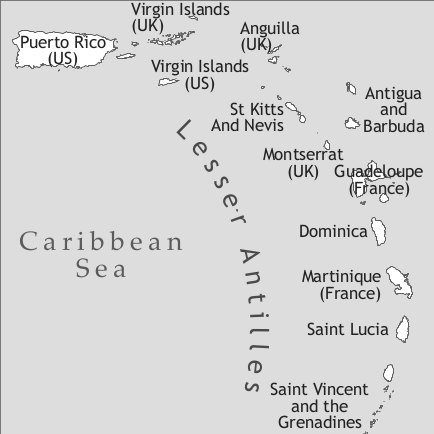

by Robbert van Sluijs

Negerhollands (“Negro Hollandish”; no real autoglossonym known) used to be spoken on the islands of St. John, St. Croix, and St. Thomas of the current United States Virgin Islands. Negerhollands came into existence somewhere between the end of the 17th century and the first half of the 18th century. Already in the course of the 19th century the use of the language was more and more receding, being replaced by English and English Creole. The last speaker died in 1987. The following description is based on the latest well-documented stage of Negerhollands, which was in the beginning of the 20th century, documented by J.P.B. de Josselin de Jong.
In 1493 Columbus gave the Virgin Islands their present-day name and met some Amerindians on St. Croix. The St. Croix Taínos were subsequently decimated by genocide and epidemics (see Sale 1991, Taylor 1977). From 1600 onwards the islands were being populated by Europeans of various descent and slaves from Africa. In 1653 the Danish West-Indian Company was founded, and in 1655 the Danish made their first attempt at settling on the island of St. Thomas, but without success. In 1671 the Danish West-Indian Company obtained a monopoly over St. Thomas, and in 1672 the Danish colonization of the island began, with 113 inhabitants. The Danes surely were not the first European settlers of the island, but it seems to have been abandoned and uninhabited when they arrived. Shortly afterwards, a group of Dutch planters, who had fled from St. Eustatius to escape the raiding of the English (Goslinga 1971), settled on St. Thomas. According to Goodman (1985) they may have brought a Dutch pidgin or creole with them, spoken by their slaves, although Sabino (1990) argues that the number of slaves was probably very limited. In what is taken to be the formative period of Negerhollands, in 1688, when the first official census was held, there were 422 slaves in St. Thomas, and 317 whites, among whom there were (see Arends & Muysken 1992):
66 Dutch households
32 English
20 Danish
8 French
3 German
3 Swedish
1 Holstein
1 Portuguese
These figures show that the slaves were faced with a potentially very heterogeneous primary ‘target’ language, dominated by Dutch (mainly in Zealandic and Flemish varieties). We can also expect English and Danish (lexical) influences, which turn out to be there as well.
On the basis of archival research, Sabino concludes in her dissertation (1990) that in 1692 already a fifth of the slave population consisted of children born in St. Thomas. This is a relatively fast development, especially when considering that in Suriname, for instance, it was only after one century of colonization that there was a large group of locally born slaves.
We should also consider the heterogeneity of the slave population of that time. Often they were abducted from various places far away from the West African coast. According to Feldbæk & Justesen (1980) the large majority of the slaves imported in the period between 1672 and 1739, the formative period of Negerhollands, consisted of Twi-speaking Akan. Nevertheless, we do not find clear traces of this Akan influence. In fact, Sabino (1988) hypothesizes that Ewe speakers constituted the most important group in terms of African lexical substrate influence. Judging by the relatively short period between colonization and the emergence of a locally born slave community, Negerhollands could have become a creole language diverging rather strongly from Dutch. There was no time for a very gradual acculturation of the imported slaves to the colonial languages. Apparently, however, the birth rate of the population was so high that a creole emerged which was quite close to Dutch. It must have been the locally born slaves who created Negerhollands, and they would have learned better Dutch than the newly arrived.
If we accept the theory of Goodman (1985) that Negerhollands emerged gradually in St. Eustatius before being taken to St. Thomas, then it is clear that internal migration (i.e. inside the Caribbean) played an important role in the genesis of Negerhollands. The sudden influx of an established group of Negerhollands-speaking slaves at the beginning of the Virgin Islands colony could have been the decisive factor.
As already mentioned, in 1688 the slave population in St. Thomas outnumbered the white population. In 1725 their number had increased to 4,490. In 1717 St. John came under Danish occupation, but by 1721, 25 of 39 planters on St. John were Dutchmen, and only nine were Danes (Hall 1992: 11). It was reported early on that the slaves on that island also spoke Negerhollands, which is perhaps an indication that the Creole must have already existed early in the 18th century.
Negerhollands only really flourished between 1730 and 1830. The four schemas in Figure 1 from van Rossem & van der Voort (eds. 1996: 31, erratum) form a rough representation of the sociolinguistic situation in St. Thomas in four stages of the development of Negerhollands. The vertical axis symbolizes prestige.
|
(1) 1750
|
(2) 1800
|
||||||||||||||||||||||||||||||||||||||||
|
(3) 1850
|
(4) 1900
|
||||||||||||||||||||||||||||||||||||||||
In 1848 slavery was abolished on the Virgin Islands, and this perhaps delivered the final death-blow to Negerhollands. From 1840 onwards Negerhollands was replaced more and more by English among the slaves, particularly when after emancipation the ex-slaves went to the towns. Because Negerhollands was a plantation language and only weakly represented in the towns, the language decayed. In 1881, according to Pontoppidan (1881), Negerhollands was still spoken on St. John and in the more remote corners of St. Thomas, while it had almost completely disappeared on St. Croix. In 1922/1923 the Dutch anthropologist/linguist/archaeologist J.P.B. de Josselin de Jong was still able to collect fairy tales and fables in Negerhollands, from narrators and informants all born between 1841 and 1863, which was reason for de Josselin de Jong to speak of ‘presently rapidly dying Negerhollands’. Yet, in 1936, F.G. Nelson still encountered speakers of Negerhollands. The language continued to have a handful of speakers until the late 1970s. In 1987 the last speaker, Mrs. Alice Stevens, died.
|
Table 1. Vowels |
|||
|
front |
central |
back |
|
|
close |
i <i> |
u <u> |
|
|
close-mid |
e <ē, ê> |
ə <ə> |
o <ō> |
|
open-mid |
ɛ <e> |
ɔ <o> |
|
|
open |
ɑ <a>, a <ā> |
||
Negerhollands has a vowel system of nine vowels (between angle brackets is the spelling of de Josselin de Jong (1926)). Stolz (1986: 50) interprets the written Negerhollands data as having long and short vowels. Sabino (1990: 89), who made recordings of the last speaker of Negerhollands, did not find any evidence of a quantity contrast in the Negerhollands vowels, but a quality contrast (/e/ vs. /ɛ/, /o/ vs. /ɔ/, and /a/ vs. /ɑ/), an interpretation which seems more plausible, since (Zealandic) Dutch, the main lexifier, also has a quality contrast rather than a quantity contrast regarding these vowels. Boretzky (cited in Stolz 1986: 50) had already mentioned that Negerhollands was the only Atlantic creole language with a phonologically relevant quantity contrast, “falls man den Notationen trauen darf.”3
Stolz (1986: 44) analyzes the schwa in Negerhollands as “ein auf atonische Silben beschränktes generelles Vokalallophon der sogenannten Vollvokale die […] aus dieser Position […] nicht ausgeschlossen sind.”4 Indeed, the schwa occurs quite often in atonic syllables, as an allophone of a full vowel in the place of the schwa (e.g. di andǝ, di andu ‘the other’ (de Josselin de Jong 1926: 56, line 37)). Sabino (1990: 71) mentions occurrences of the schwa, where it has been acquired from the lexifying language, as in her example ketəl ‘kettle’, from English kettle or Dutch ketel, or where a schwa has been inserted in the Negerhollands form, as in her example milək ‘milk’, from English milk. In these types of occurrences the schwa cannot be analyzed as an allophone of any vowel, which gives us reason to include it as a phoneme in the vowel inventory of Negerhollands.
In the texts of de Josselin de Jong (1926) there are only two words which contain /y/ <y> and three which contain /y/ <ö>. The preposition yt (‘out (of)’) occurs more frequently with the unrounded high front vowel resulting in the form it, while the word rötl (‘wrestle’) has the variant rutl (Stolz 1986: 42). Sabino (1990: 72) found that “there is no phonemic contrast between [Dutch high rounded central vowel y] and Negerhollands high back vowel”, so she assigns the former to Negerhollands /u/. In parallel, she views [y] as an allophone of /i/, because the former only occurs in contexts where it alternates with the latter.
Beside /ɛi/ and /ɔu/, Sabino (1990: 72) also analyzes /ɑi/ and /ɔi/ as diphthongs. She notes [ɑu] as allophone of /ɔu/, and [ui] of /ɔi/, and mentions that tense and lax vowels may alternate in the diphthongs.5 Except for /u/ and /ə/, all vowels may optionally be nasalized before a nasal consonant. Vowel quality is minimally contrastive in pairs like spēl /spel/ ‘to play’ vs. spel /spɛl/ ‘needle’, mān /man/ ‘moon’ vs. man /mɑn/ ‘man’, and bōt /bot/ ‘boat’ vs. bot /bɔt/ ‘but’. In some cases, however, the tense vowels (e, a, o) are in free variation with their lax counterparts (ɛ, ɑ, ɔ), e.g. gōi /goi/ ~ goi /gɔi/ ‘(to) throw’ (Stolz 1986:51). The tense close-mid vowels may likewise alternate with the corresponding closed vowel, e.g. ēntēn /enten/ ~ intin /intin/ ‘nothing’ (Stolz 1986: 50).
Negerhollands has 20 consonants (between angle brackets is the spelling of de Josselin de Jong (1926) when it deviates from the IPA):
|
Table 2. Consonants |
||||||||
|
bilabial |
labio-dental |
dental/ alveolar |
post-alveolar |
palatal |
velar |
glottal |
||
|
plosive |
voiceless |
p |
t |
k |
||||
|
voiced |
b |
d |
g |
|||||
|
nasal |
m |
n |
ŋ <ṅ> |
|||||
|
trill |
r |
|||||||
|
fricative |
voiceless |
f |
s |
ʃ <š> |
h |
|||
|
voiced |
v |
z |
||||||
|
affricate |
voiced |
ʤ <dž> |
||||||
|
lateral |
l |
|||||||
|
approximant |
w |
j |
||||||
The alveolar trilled [r] may be replaced by a uvular fricative [ʁ] when preconsonantal (Stolz 1986: 65). The sound [v] may occur as an allophone of either /f/ or /w/. Sabino counts /v/ as a phoneme, since it “cannot be unambiguously associated with any of the other segments” (Sabino 1990: 75), and because there are occurrences of it where it does not alternate with any other sound. In words originating from Dutch there is often variation between a /h/ onset and a zero onset, e.g. ham [3SG] versus am.
In words of English or African origin, among which certain names of animals or plants, the affricate /ʤ/ occurs, e.g. džidžambu ‘ginger’. The voiceless affricate <tš> occurs in the word tšokful ‘chock-full’, and it occurs as the reflex of the Dutch diminutive suffix, in words as kikintši ‘little chicken’ (Stolz 1986: 74-75). Sabino does not count [ʧ] as a phoneme, because in her recordings <tš> and <dž> were pronounced “as unitary phonemes” (Sabino 1990: 75), meaning that in her speech, Sabino’s informant did not make a distinction between voiced and unvoiced affricates, though Sabino does not specify this comment regarding the nature of her informant’s affricate. We do not know whether we are dealing with a sound change in the affricates from de Josselin de Jong’s informants from the 1920s compared to Sabino’s informant in the 1980s, or whether de Josselin de Jong’s notation of the affricates did not do justice to the actual pronunciation, as suggested by Sabino (1990: 75).
Word stress is generally word-initial, though words with word-final stress are not rare. Word stress can in some words shift from word-final to word-initial, and vice versa, e.g. puši ‘cat’ occurs as puši as well within one text (the underlined syllable is stressed). This is very probably due to word stress being subordinate to sentence stress (de Josselin de Jong 1924: 9), though not much is known about sentence stress in Negerhollands.
Nouns are morphologically invariable, e.g. ēn man ‘a man’, di man ‘the man’. To mark number, optionally the 3pl pronoun is added to the noun, e.g. difman ‘thief, thieves’, difman sini ‘thieves’. Natural gender may be expressed by different words, like juṅ ‘boy’ and menši ‘girl’, or man ‘man’ and frou ‘woman’, e.g. di manroto sini ‘the male rats’, di froufolk sini ‘the women’ (lit. [the women they]), juṅ-kin ‘son’ (lit. [boy-child]), and menšikin ‘daughter’ (lit. [girl-child]).
There is an indefinite article ēn identical to the numeral ‘one’. It is preposed to the noun, e.g. ēn mes ‘a knife’. The definite article occurs both with full vowel and with neutralized vowel without any semantic contrast: di kiniṅ ‘the king’, də kiniṅ ‘the king’. Sometimes the definite article is omitted in a context where one would expect a definite article. The definite article is also used in generic contexts.
The definite article with full vowel is combined with the locative adverbs hi(so) ‘here’ and dā ‘there’ to form a demonstrative with a two-way distance contrast.
Adnominal possessives generally precede the noun and are identical in form to the personal pronouns, except for 3sg adnominal possessives, which have a special form, ši ‘his, her, its’, e.g. mi stok ‘my stick’, ši sak ‘his/her bag’. Adnominal possessives consisting of the preposition fa(n) ‘of, from’ plus personal pronoun, as a whole preceding the noun (as in (1)) occur as well. Pronominal possessives consist of the preposition fa(n) ‘of, from’ plus personal pronoun, as in (2). (Note that from example (2) onwards, “de Josselin de Jong 1926” is abbreviated as “dJdJ 1926”.)
For possessor noun phrases there are three strategies without a real difference in meaning, though (iii) has a tendency to appear in constructions where it has an ablative, partitive, or locative meaning (Stolz 1986: 126):
(i) The possessor precedes the possessee and has no marking.
(ii) The possessor precedes the possessee. The possessor is indexed on the head noun via the adnominal possessive pronoun.
(iii) The possessor follows the possessee. The possessor consists of the preposition fa(n) ‘of’ plus the noun phrase.
The adjective precedes the noun and is invariable, e.g. ēn klēn mēnši ‘a little girl’, ēn klēn juṅ‚ ‘a little boy’, sterǝk man ‘strong men’.
There are two comparative constructions of equality: one in which the standard is marked by leik/leiki/liki ‘like’ and the adjective optionally marked by so (as in (6)), and one in which the standard is marked by a ‘as’ and the adjective is marked by džis ‘just’ (as in (7)):
In comparative constructions of inequality the standard is marked by a ‘as’, and the adjective by mē ‘more’, as in (8). An exception to this is bētǝ ‘better’.
There are no actual occurrences of a productive superlative marking to be found in the texts of de Josselin de Jong (1926), noted as well by Stolz (1986: 142). The superlative forms found are all suppletive forms, based on the Dutch (and occasionally English, as in di langis ‘the longest’) superlative forms, which are formed by the suffix –st(e) and the determiner preceding the adjective:
The personal pronouns, as well as the adnominal possessives, are all identical in form, as can be seen in Table 3, with the exception of the 3SG possessive, which has its own form: ši ‘his, her, its’ (versus am). There is no gender distinction in the third person (am refers both to male and female), while inanimate referents are referred to by di. There is quite a lot of allomorphy regarding in particular the plural pronouns. While 3sg am occasionally occurs as ham or /ã/, this can be seen as allophonic rather than allomorphic variation according to the phonological rules presented in §4. As to the plural pronouns, 1pl ons occasionally shows the allomorph oṅ (/oŋ/). 2pl jen occurs as well as jin, jinǝ or jini, with a distribution that makes it hard if not impossible to pick out one form as the main form of which the rest are variations. The 3pl pronoun occurs as sinu, sini, senr, sinǝ, seni, or zinǝ (and some more marginal variations of this kind), of which sinu and sini are the main and most frequent forms.
|
Table 3. Pronouns |
||
|
subject/object pronouns |
adnominal possessives |
|
|
1sg |
mi |
mi |
|
2sg |
ju |
ju |
|
3sg.anim |
am |
ši |
|
3sg.inanim |
di |
ši |
|
1pl |
ons |
ons |
|
2pl |
jen |
jen |
|
3pl |
sinu |
sinu |
The indefinite pronouns are ēngut, somgut ‘something’, ēntēn (gut) ‘nothing’, ēntēn folǝk ‘nobody’, and som fulǝk ‘someone’ (de Josselin de Jong 1926). The forms with ēntēn also occur with the negator nit ‘not’ preceding and as such completely correspond to the English indefinite pronouns with any, noticed by de Josselin de Jong as well (1926: 78). Also notice the parallel in the formation of indefinite pronouns with som ‘some’ and the English pattern with some. Ēntēn is also the adnominal negator, which is why often the noun gut ‘thing’ is added for the meaning of ‘nothing’.
Negerhollands has five verbal markers relating to tense, aspect and mood, given in Table 4. Sa(l) is a future marker. Lō functions as a progressive marker that can also occur in habitual contexts and as a future marker, in that sense also occurring as lō lō (Stolz 1986). Progressive lō occurs as well in constructions with a copula, possibly under influence from the English progressive construction, e.g. ‘he was reading’. There is no semantic difference between the construction with and the one without copula (van Diggelen 1978: 75):
(H)a is a past tense marker, but occosionally verbs with past time reference are unmarked. Stolz (1986: 160) points out that the usage of (h)a is much broader than the Dutch past tense construction as in some cases it is translatable with a Dutch perfect or pluperfect. Kā expresses perfective, completive, or resultative aspect (see Stolz 1986: 184-186 for discussion). Habitual aspect is marked by kan, which is homophonous with the modal verb kan ‘be able to’. The past tense marker (h)a can be combined with any other particle, except for the future particles sa(l) and future lō. The combination of sa with the completive kā results in either a conditional (see (11)) or a necessitive counterfactual (see (12)). De Josselin de Jong (1926: 99) notes in his wordlist for sa kā: “[sa kā] wordt gebruikt in de verschillende beteekenissen van eng. “should have” en “would have”.” [Sa kā is used in the various meanings of English “should have” and “would have”].
|
Table 4. Tense-Aspect-Mood markers |
||
|
tense/aspect |
mood |
|
|
zero |
present tense, past tense |
|
|
(h)a |
past tense |
|
|
kā |
perfective aspect completive resultative |
|
|
lō |
progressive (habitual) future |
|
|
lō lō |
future |
|
|
kan |
habitual |
|
|
sa(l) |
future |
|
|
sa kā |
perfective/completive perfective/completive |
necessity + counterfactuality conditional |
In Table 5 the modal verbs are shown with the modality expressed.
|
Table 5. Modal verbs |
||
|
modality |
example |
|
|
kan |
possibility |
Wa werēk ju kan du? what work 2SG can do ‘What work can you do?’ (dJdJ 1926: 17) |
|
permission |
numē di dā ju maṅkḗ, dan ju kan ha di. only DET there 2SG want, then 2SG can have DET ‘If that’s all you want, you can have it.‘ (dJdJ 1926: 23) |
|
|
epistemic possibility |
A. na kan sē am ēntēn lik A. NEG can say 3SG no lie ‘A. cannot have told him any lie.’ (dJdJ 1926: 13) |
|
|
ha fo / fo |
necessity |
Senǝ sa ha fo wel am. 3PL FUT have for like 3SG ‘They will have to like him.’ (dJdJ 1926: 11) |
|
epistemic necessity |
[D]i fo ha sómgut am maṅkḗ am fo du. DET for have something 3SG want 3SG for do ‘There must be something he wants him to do.’ (DJDJ 1926:13) |
|
|
maṅkē (fo) |
volition |
Am maṅkē lō a ši mumā. 3SG want go LOC 3SG.POSS mother ‘He wants to go to his mother.’ (dJdJ 1926: 21) |
There are (just) a few attestations of the modal necessity verb mut, which was the common modal for the expression of necessity in the older phases of Negerhollands, and seems to have been replaced by ha fo. The verb wel was a modal verb of volition in the older phases of Negerhollands, but in the 20th century it commonly means ‘to like’ (as in Table 5). There are quite some attestations of wel with a volitional interpretation to be found in the 20th century data. There are occurrences of kan and ha fo with an epistemic interpretation, but especially for kan the epistemic interpretation does not seem to have really been grammaticalized. Ha fo is often shortened to just fo (variants: for, fu), with (what was originally) the preposition or compact clause complementizer carrying all of the meaning.
The negation particle (no, na, nu, nǝ, ni, ne) precedes the verb and all particles, but follows the subject.
There are seven copulas, which differ in distribution.6 Wēs is the most neutral copula, and is equally used for predicate NPs, adjectives, and locative phrases. Wēs is in principle the only copula that is used in combination with TAM markers and auxiliaries (as in (13)), though exceptions occur (note the copula bin with past tense marker in (10a)). Mi is particularly used with predicate adjectives. It cannot occur in sentence final position (Graves 1977). A is the only copula that can function as topic marker (see (14)), and it occurs particularly with noun predicates. The copulas be, bi, and bin are regarded by Stolz (1986) as allomorphs of the same copula, which particularly occurs with predicate locatives. A zero-copula occurs as well, though marginally. I have glossed the copulae wēs, be, bi, and bin as ‘be’, because especially wēs functions as the English verb be, with all its meanings, while being able to bear stress, and having a broader distribution with noun phrase and adjective predicates as well, be, bi, and bin function more as a full verb ‘to be’ than both mi and a do. Mi, occurring with noun phrases and locative predicates as well, but relatively much less, and a, which does occur with adjectives but not with locative predicates, do not bear stress, and are glossed with COP.
The word order is Subject - Verb - Object:
(15) a. Ju lō mata di kui!
2SG FUT kill DET cow
‘You are going to kill the cow!’ (dJdJ 1926: 28, line 35–36)
A non-pronominal subject is occasionally left-dislocated and followed by a pronominal subject.
(15) b. Di noli ham a wēs di grostǝ.
DET donkey 3SG PST be DET biggest
‘The donkey was the biggest.’ (dJdJ 1926: 16, line 17)
In ditransitive constructions both objects follow the verb, and either the indirect object or the direct object may go first. The indirect object may be coded with a preposition (a ‘to’ or fo ‘for’), also when it precedes the direct object (see 16), or the indirect object may occur with a special verbal construction gi ‘give’ plus indirect object (as in (17)).
The passive voice is unmarked, which means it is formally not distinguishable from the active:
Passive constructions with kā can be encountered as well (cf. (19)), though it is unclear whether the passive meaning really follows from this particle, or whether this particle only expresses perfective, completive, or resultative aspect.
In reflexive constructions, the pronoun is used plus the lexical element sel ‘self’ (20), although incidentally reflexives with only the pronoun occur.
The verbs gi ‘give’, kō ‘come’, and lō ‘go’ occur as serial verbs, or perhaps rather remains of serial verb constructions. The verb gi ‘give’ may be used to introduce a recipient or beneficiary, as shown in (17), and as such behaves as a preposition. The verbs kō and lō are used almost adverbially, with the meaning ‘here, in this direction’ (see (21)) and ‘away, from here’ (see (22)) respectively (van Diggelen 1978: 76–77). Kō in this meaning occurs only with the following verbs: kuri ‘run’, and briṅ ‘bring’, lō briṅ ‘go for’. Lō in this meaning occurs only with the following verbs: kuri ‘run’, flig ‘fly’, dra(g) ‘carry, take’, and drai ‘change, return’ (van Diggelen 1978: 76–77).
Coordinating conjunctions are en ‘and’ (conjoins clauses and nouns), mi ‘with’ (conjoins nouns), and ma ‘but’. Adverbial clauses are introduced by conjunctions such as weni ‘when, if’, tē ‘until’, astǝr ‘after’, and others. Compact purpose clauses are introduced by the preposition fo ‘for’.
With verbs of saying and knowing, as with other verbs, there is a strong preference for zero-marking of the complement clause. Marking of complement clauses does occur incidentally, with dat ‘that’ and se ‘to say’ (cf. (23)).
Relative clauses are either zero-marked or introduced by wa ‘what’. Relative clauses follow the head noun.
Polar questions are only marked by intonation:
In content questions, the interrogative is fronted:
The copula a functions as the marker of topicalization, as mentioned in §6. It can be used to topicalize verbs, nouns, prepositional phrases, and adverbs. The topicalized element is placed sentence-initially and introduced by a:
Acknowledgements go in particular to Hein van der Voort for his corrections, valuable comments, and extensive help with the reference list, and to Pieter Muysken and Margot van den Berg for their help with the reference list. I am responsible for any remaining errors or omissions.